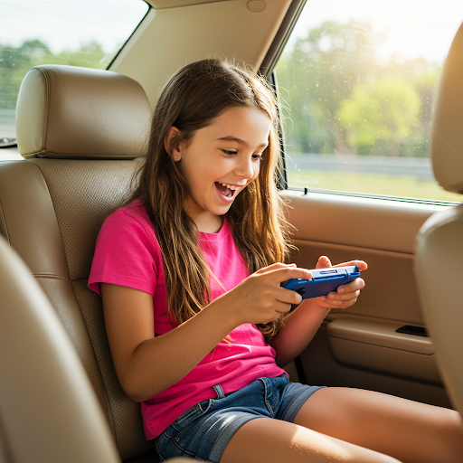
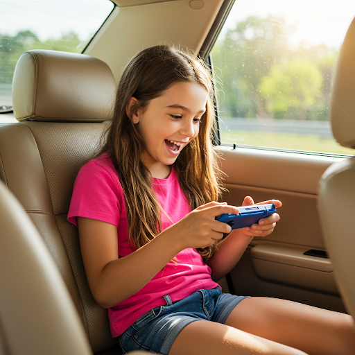

Welcome to My Hobby: Gaming
Gaming is more than just a hobby; it's a way of life. Explore different worlds, connect with communities, and experience emotions beyond imagination.


Gaming is more than just a hobby; it's a way of life. Explore different worlds, connect with communities, and experience emotions beyond imagination.
Hello, my name is Christian Beckford. I'm 21, and my hobby is playing video games. It has been a huge part of my life. It has given me a way to escape from everything around me. It transports you to a whole new world. Ever since I was 5, I have played video games. Back when I was 3, I would watch my brother play video games with his friends when they were over. He gave me an unplugged controller to make me think I was playing with them. That’s when my passion all started.


It was season 3 of Fortnite. All of my friends were on the grind trying to get to 200 solo wins first. I was ahead for a little bit around 150, but then I got grounded. I fell behind, and my friends got ahead of me. I didn’t let that stop me. As soon as I got ungrounded, I pushed hard all week to pass them and get it. On June 18, 2018, with an 8-kill win next to Fatal Fields, I won the bet, and the rush of adrenaline was immaculate.
It was May 22, 2021. In Destiny 2, when raids first come out, there is a Contest Difficulty mode available only for the first 24 hours. This drastically increases the difficulty. However, if you complete it, you earn a special emblem that is only obtainable during that time. I was with a random group from the UK. I had never played with them before, and I joined them for the last encounter.
Since Vault of Glass is a raid from Destiny 1, they make you clear the raid twice, with the second time including special challenges. We were on the final part of the second run for four hours. The event closed at 1 PM, and we only had 15 minutes left. No one died, and we had our best run yet. We pumped out the best damage we had and slayed Atheon, the Time’s Conflux, at 12:58 PM.
Out of my 5,700 hours of Destiny 2, this was my favorite moment ever. It was odd because, after that, I never talked to them again. Everything lined up perfectly in that moment.

.png) 

You can play video games anywhere you like. Since there are so many ways to play video games, you can realistically play them from wherever you choose. It could be from your bed, on the side of the Eiffel Tower, or even in space. It’s all about where you feel most comfortable and where it’s most convenient for you to play. Gaming is about being a place you feel free from the world.
There are many ways to start playing video games. An easy way is through your phone. With modern phone technology, you can play many high-quality games. Then, you have other handheld devices like the DS, the Switch, or the Steam Deck—more powerful handheld gaming devices.
If you want something more traditional, there are consoles like the Xbox and PS5. You can even go back to older consoles like the Wii, GameCube, and NES. However, for the most optimal gaming experience, a PC (Personal Computer) is the best choice. A PC gives you the best performance and the ability to play most games from other platforms, though it is usually the most expensive option.
There are so many ways to get into gaming. It’s only a matter of time before you do.
Video games, in my opinion, are the best way to escape from the world. The world we live in is cruel and hateful. It sucks, and we need ways to step back from reality. Video games are one of the best options for that.
You can explore different worlds and so many different genres. There are countless ways to play games, and an endless number of games to play. The communities surrounding each game are passionate, and the people in them love what they play. You can find a group that fits you and realize how many different people you can connect with—possibly even forming lifelong friendships.
Gaming is a lifestyle that positively impacts almost everyone who plays. There are so many games that evoke emotions you wouldn’t expect from moving images on a screen. You can even make a living from gaming, whether by competing in tournaments, streaming, or making videos for others to enjoy.
There are also psychological benefits, such as improved decision-making and sharper reaction times. Gaming is something I hold dear to my heart, and it has changed my life forever, just as it has for many others around the world. I wouldn’t know where I’d be without it.

In this project, Chat GPT was used for coding assiatance with debugging and stucutre. Then Gemmni 2.0 was used for images
For my AI images promts are "make him holding a switch and on the eiffel tower" , "a guy playing video games on his pc" , "do aimage of a guy playing form his couch", "do a picture of a girl playing games in the car" , "do ap hot of a girl playing vidoe games at a cafe" , "gaming event", "a love heart next to a xbox controller with white background". These images used on all of the where and on the why for the gaming event image
For my My coding assiatacne at first i put the entire instructions in chat and told me to get my stucture and with Hard CSS styling started to fill it in. Then through out Chat GPT to debug mistakes with my code. (i still couldnt get 2 of my boxes to be centered still). I currently can put all my prompts due to the Chat GPT limitation with the free version until tommrorow. But I can explain the prompt order process. I first did the structure then i filled the information and images. Then did the CSS then put it into the AI to debug until it was at least somewhat correct. I did this for every section until I was satasifed. I will put in my promts when it lets me see my prompts. I also used it for the JavaScript implemtaiton of the hiding pages.